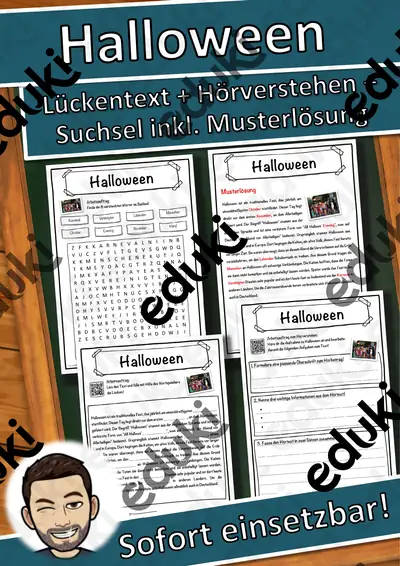

Lesespur: Halloween: woher das Fest kommt und wie man es in Irland feiert – Lesespurgeschichte mit Rätseln (Klasse 3)
Halloween – woher das Fest kommt und wie man es in Irland feiert – Lesespurgeschichte Englisch (Klasse 3/4)Schick deine Klasse auf eine Lesespur über ein irisches Kulturfest! Niamh aus der 4c, deren Familie aus Irland stammt, besucht mit ihrer Klasse und dem Englischlehrer Mr Bennett ein Halloween-Fest im Gemeindesaal. Mit ihrer kleinen Rübenlaterne Turnip entdecken die Kinder, woher Halloween kommt: vom keltischen Fest Samhain über die Laternen aus Rüben, das irische Früchtebrot barmbrack mit dem versteckten Ring, das Spiel apple bobbing und das Verkleiden beim guising bis zur Reise des Festes nach Amerika, wo aus der Rübe der Kürbis wurde. Freundlich und fröhlich – ganz ohne Gruseln. Am Ende jedes Abschnitts verrät ein Hinweis den nächsten Ort auf dem Plan – nur wer genau liest, findet den Weg und sammelt alle geheimen Buchstaben zum Lösungswort.
Die perfekte Lesespur für den Englischunterricht in der 3. und 4. Klasse – passend zu Halloween am 31. Oktober, für interkulturelles Lernen und erste englische Wörter, fächerübergreifend mit Heimat- und Sachunterricht und Deutsch, ideal auch für Vertretungsstunden. Das Material ist SOFORT EINSETZBAR und in DREI DIFFERENZIERUNGSSTUFEN (leicht ★ / mittel ★★ / schwer ★★★) angelegt.WICHTIG: Das komplette Material ist sowohl in FARBE als auch in SCHWARZ-WEISS enthalten – ideal zum Sparen von Druckkosten.DAS IST ENTHALTEN
- Lesespurgeschichte in 3 Niveaus (leicht, mittel, schwer)
- farbiger Plan als Suchkarte
- Hörverstehen mit QR-Code zur MP3 (selbstständiges Hören mit Kopfhörern)
- vier Aufträge auf dem Weg: eine Zuordnung (englische Halloween-Wörter), ein Quiz, eine Rechenaufgabe und ein Steckbrief
- Rätselseite (Wörter-Suchsel + Fragen rund um Halloween)
- Ausmalbild zum Thema
- ausführliches Lösungsblatt für die Lehrkraft
- alles zusätzlich als komplette Schwarz-Weiß-VarianteSO GEHT DIE LESESPURDie Kinder lesen ab START, finden im Text den nächsten Ort, suchen ihn auf dem Plan und lesen bei dieser Station weiter. An jeder richtigen Station gibt es einen Buchstaben. Eingeplante Sackgassen (Garderobe, Klavier, Getränketisch, Stuhlstapel) sind keine Stationen und dienen der Selbstkontrolle. Am Ende werden die gesammelten Buchstaben umgestellt und ergeben ein geheimes Lösungswort. (Die Lösungen sind selbstverständlich nur im Lösungsblatt für die Lehrkraft enthalten.)INHALTLICHER SCHWERPUNKTHalloween als Fest im englischsprachigen Raum: All Hallows' Eve, das keltische Samhain, Rübenlaternen und Kürbisse, barmbrack, apple bobbing, guising und trick or treat, Auswanderung nach Amerika; Wortschatz pumpkin, turnip, costume, lantern und einfache englische Ausrufe mit deutscher Bedeutung.ABGEDECKTER LEHRPLAN (Klasse 3/4)
- Englisch (LehrplanPLUS Bayern, Grundschule) – Jahrgangsstufe 3/4: Interkulturelles Lernen, Feste und Bräuche im englischsprachigen Raum, Wortschatz.
- Heimat- und Sachunterricht – Bräuche und Feste im Jahreslauf.
- Mathematik – Addition und Multiplikation in einer Sachaufgabe.
- Deutsch – Jahrgangsstufe 3/4: Texte sinnentnehmend lesen; Zuhören: einem Hörtext gezielt Informationen entnehmen (Hörverstehen mit MP3).Geeignet für Freiarbeit, Stationenlernen, Vertretungsstunden, Wochenplan und für die Woche vor Halloween. Klassenstufe 3 und 4.
Ähnliche Materialien

Lesespur: Halloween Traditions in Ireland – Lesespurgeschichte mit Rätseln auf Englisch (Klasse 6)

Lesespur: Woher kommt mein Spielzeug: die Weltreise eines Spielzeugautos – Lesespurgeschichte mit Rätseln (Klasse 8)

Halloween Lückentext mit Wortspeicher Hörverstehen und Suchsel

Halloween-Handpuppen – Bastelvorlage mit Sachtext und Puppentheater, 3-fach differenziert (Klasse 1/2)

Materialpaket Herbst-Lesespuren für die 3. Klasse: 7 Lesespurgeschichten mit Rätselaufgaben (Kürbis, Igel, Laterne, Halloween & mehr)

Irland Lückentext mit Wortspeicher Hörverstehen und Suchsel

Lesespur: Christmas Tree Farm – Lesespurgeschichte mit Rätseln auf Englisch (Klasse 6)